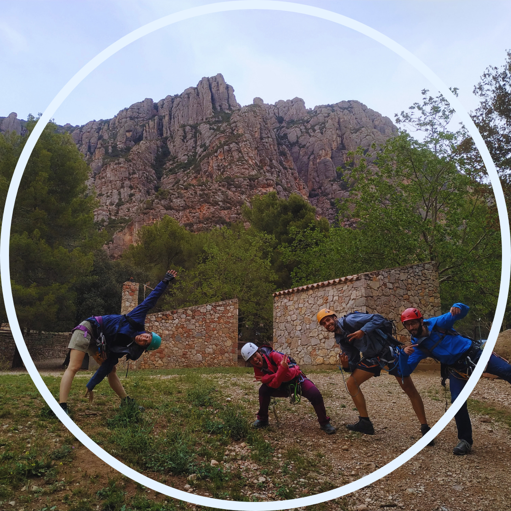
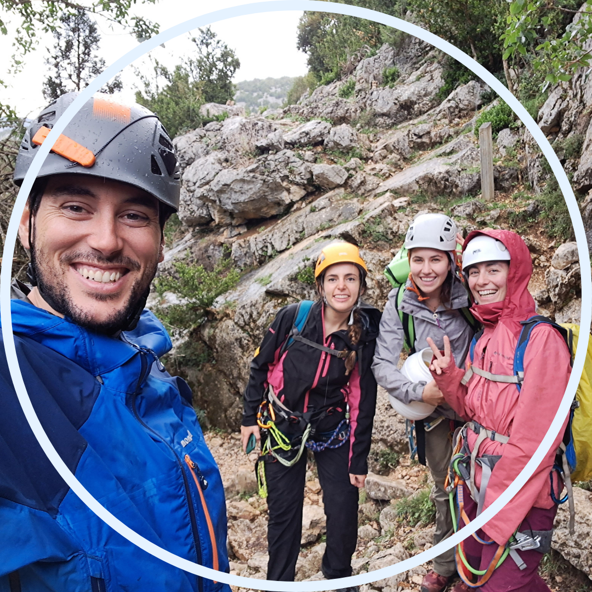
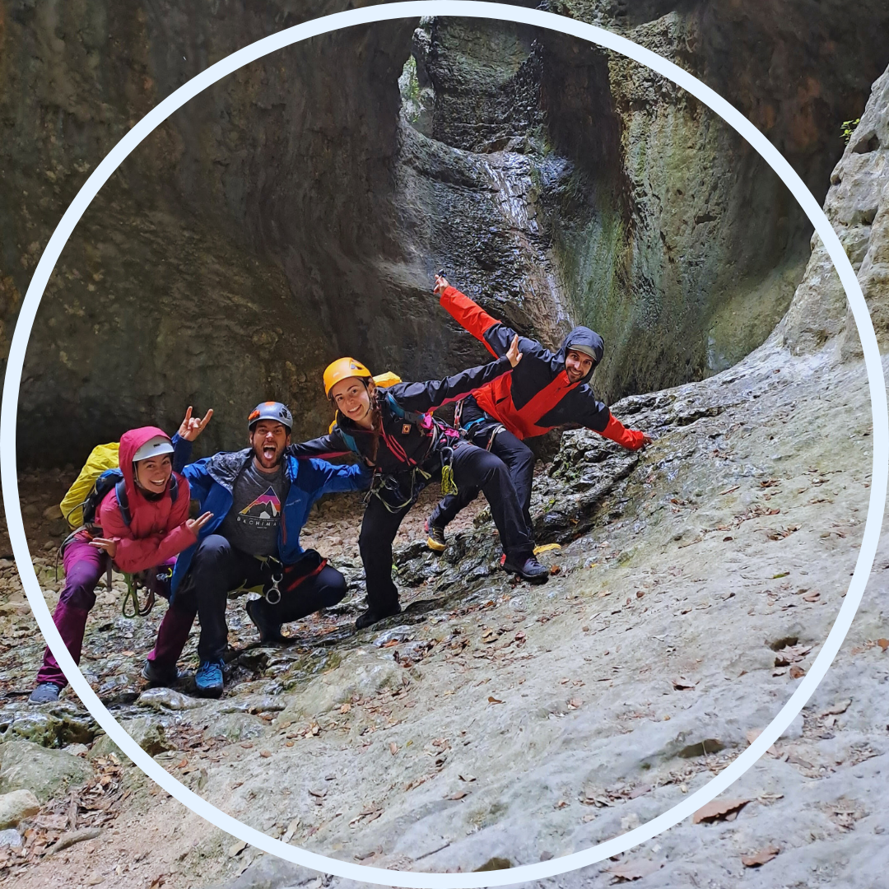
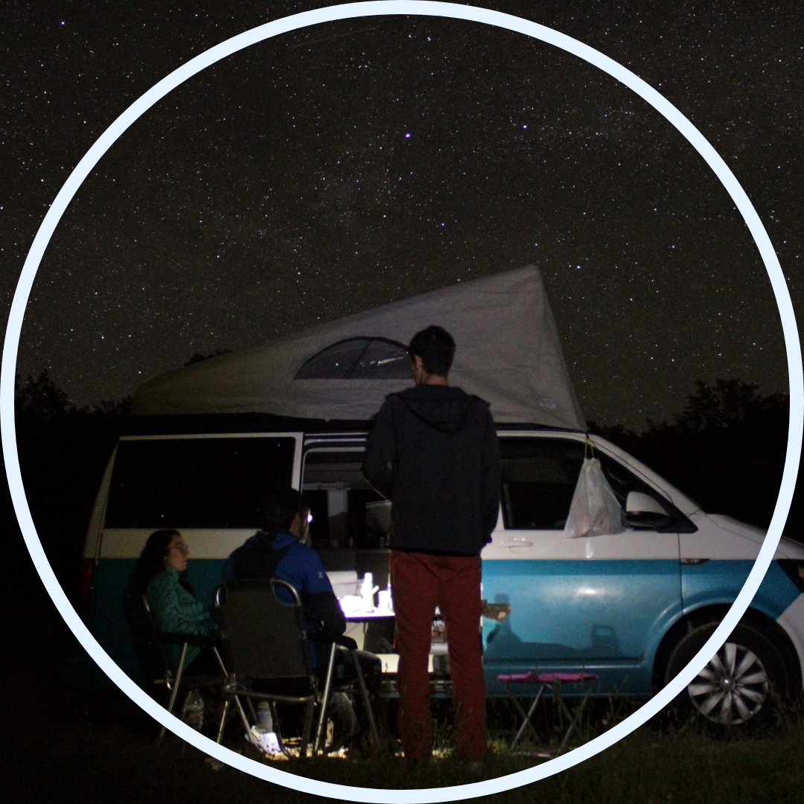
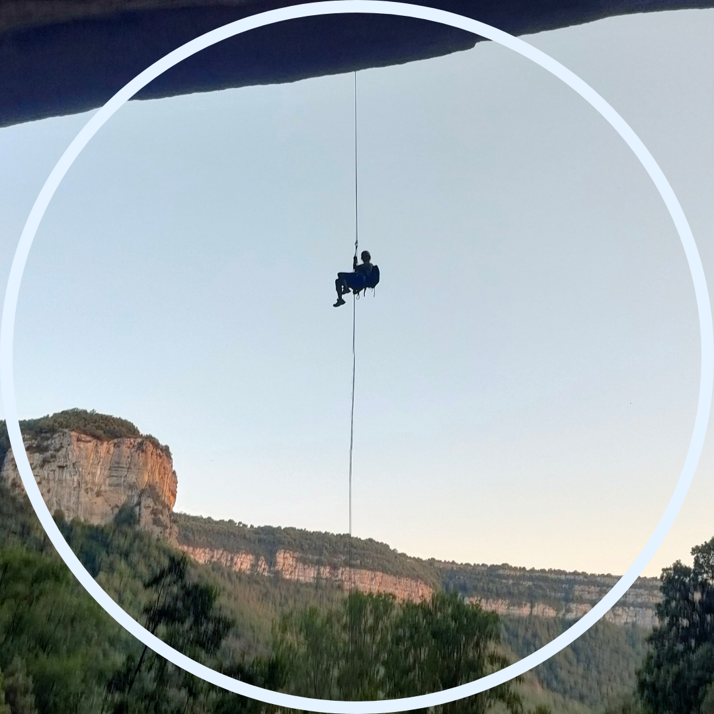
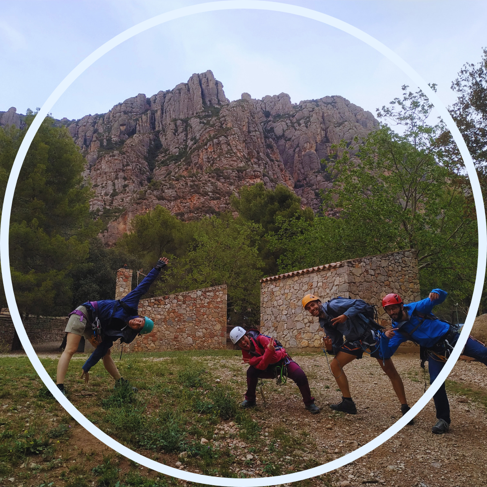
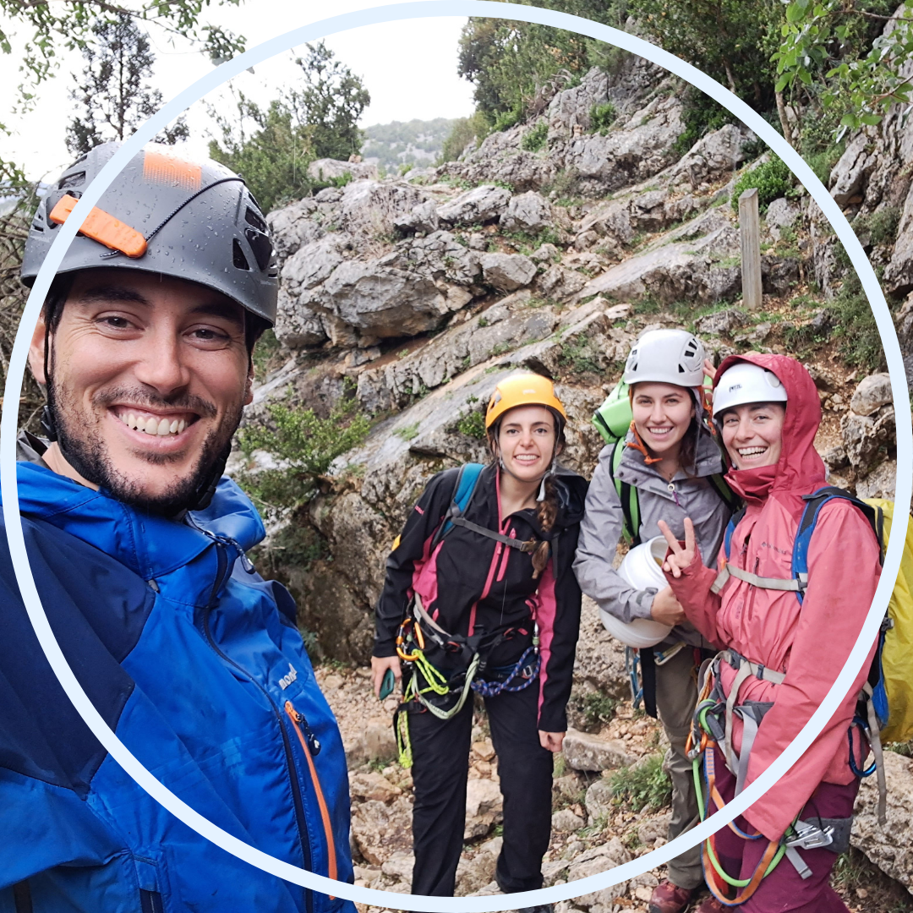
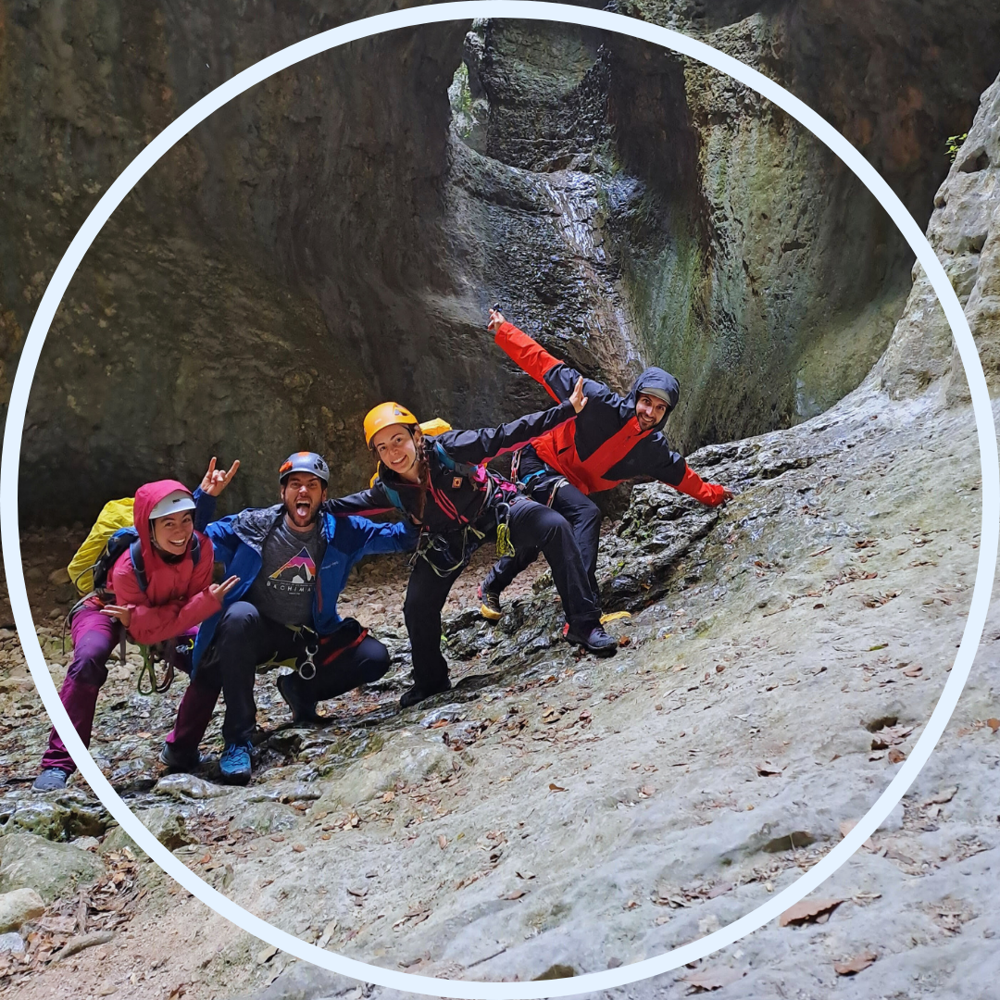
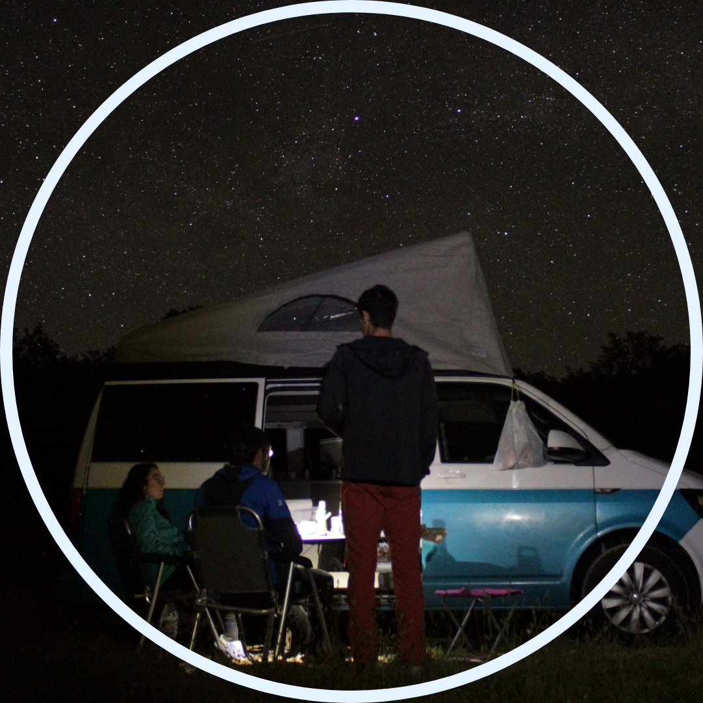
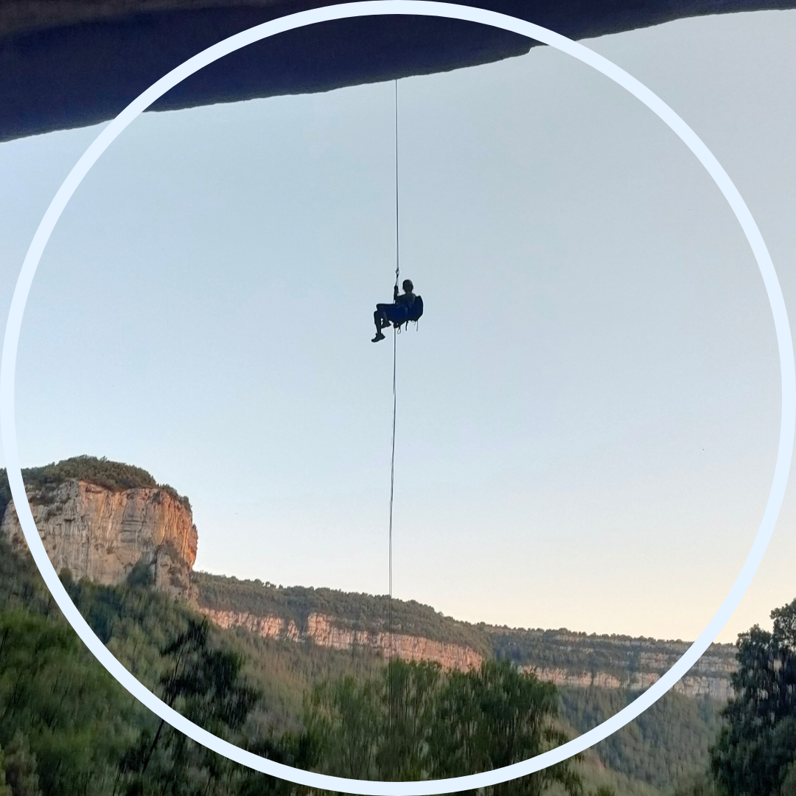

30 d'abril de 2023. Descobrint una passió
14 de maig de 2023. Atope
20 de maig de 2023. Atope
3 de juny de 2023. Descobrint els barrancs semisecs.
5 de juny de 2023. El paradís dels barrancs.
12 de juny de 2023. Rapel volat. Aturem el temps per tenir dos diumenges.
23 de juny de 2023. Quina por!
1 d'octubre de 2023. És real!
21 d'octubre de 2023. Primer barranc que guio, molt bona gestió, gràcies a aquest barrnc em coronen deixeble barranquista.
18 de novembre de 2023. Repetim la VF d'Urquiza-Olmo
26 de novembre de 2023. Estrena de la corda que m'han regalat. I l'Esther ve al CEC per primer cop!
7 de gener de 2024. Primer barranc de l'any, no hem esperat gaire, no.
4 de febrer de 2024. M'he cagat molt amb el 1r ràpel volat.
no sé quin dia de 2024. Se'ns va fer de nit...